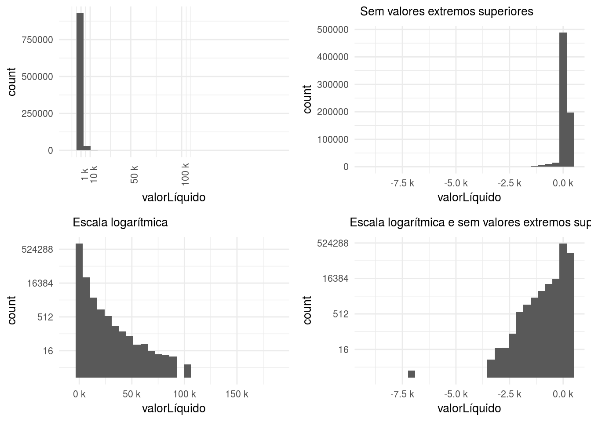
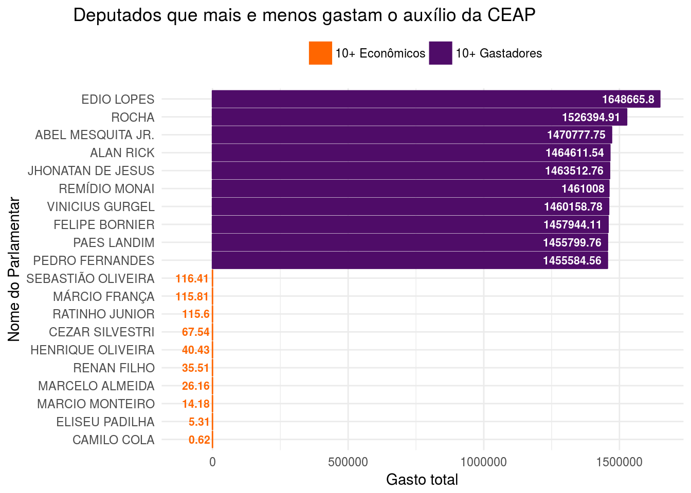
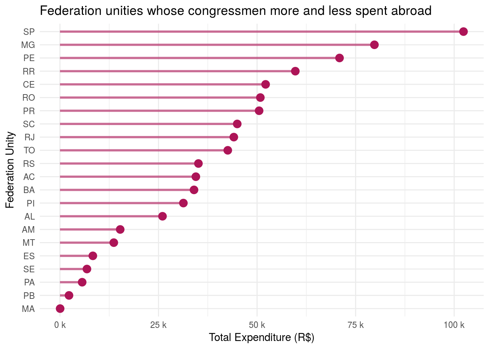
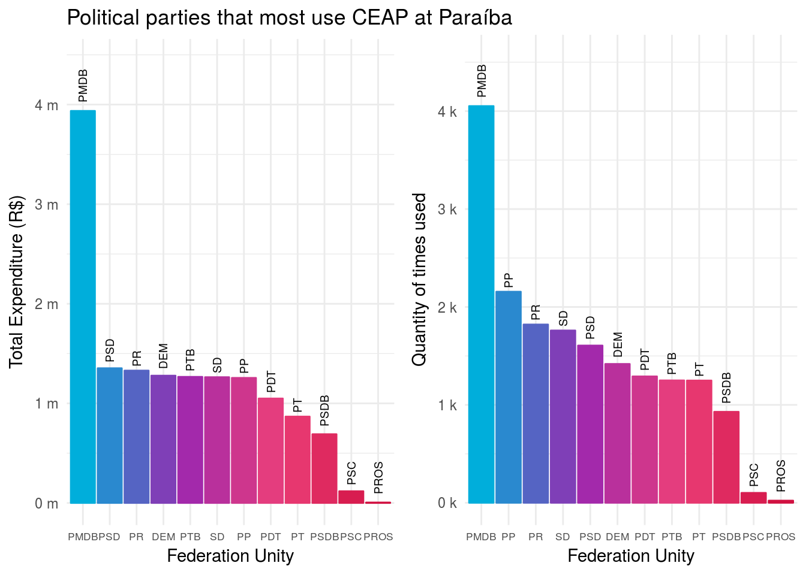
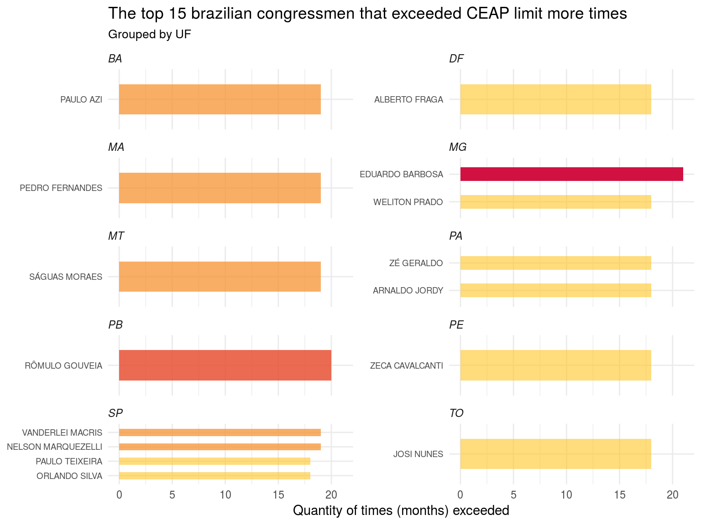
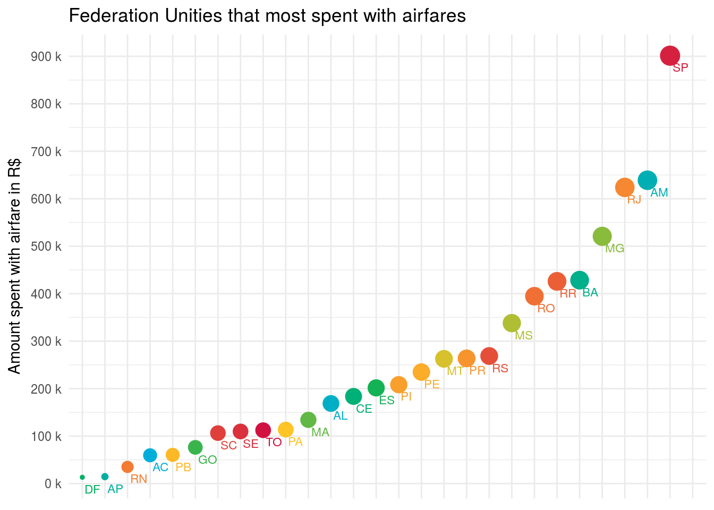
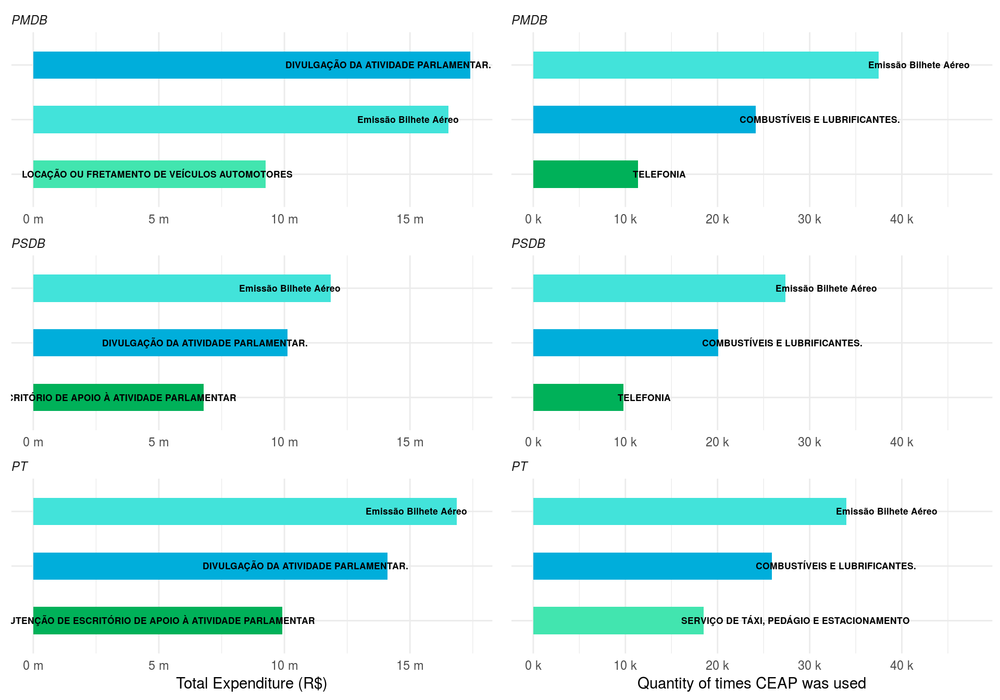

Ítalo Batista


A CEAP (Cota para Exercício da Atividade Parlamentar) é um auxílio que deputados e deputadas recebem. Nesta análise vamos explorar como esse auxílio vem sendo utilizado.
Vamos importar nossos dados:
library(readr)
library(here)
data.ceap = read_csv(here::here("data/ceap/ceap.csv"))
limit.ceap = read_csv(here::here("data/ceap/limiteMensalCEAP.csv"))Uma das principais variáveis do conjunto de dados a ser analisada é o valor de cada gasto feito por deputadas/os. Abaixo, o comportamento geral dessa variável(valorLíquido).
require(gridExtra)
library(scales)
library(tidyverse)
# Definindo algumas constantes
segment.y = 5000
x.init = min(data.ceap %>% select(valorLíquido))
x.end = max(data.ceap %>% select(valorLíquido))
x.3rd.qrtl = 513
# Um hisogram genérico, para ser reusado nos gráficos abaixo
histogram = data.ceap %>%
ggplot() +
geom_histogram(aes(valorLíquido)) +
theme_minimal() +
theme(axis.text.x = element_text(size=8),
axis.title.x = element_text(size=10),
axis.text.y = element_text(size=8),
axis.title.y = element_text(size=10),
plot.title = element_text(hjust = 0.1, size=10))
plot1 = histogram +
scale_y_continuous(labels = function(x) format(x, scientific = FALSE)) +
scale_x_continuous(breaks = c(1000, 10000, 50000, 100000),
label = unit_format(unit = "k", scale = 1e-3)) +
theme(axis.text.x = element_text(angle=90))
plot2 = histogram +
scale_x_continuous(limits = c(x.init, x.3rd.qrtl), label = unit_format(unit = "k", scale = 1e-3)) +
scale_y_continuous(labels = function(x) format(x, scientific = FALSE)) +
ggtitle("Sem valores extremos superiores")
plot3 = histogram +
scale_x_continuous(limits = c(x.init, x.end), label = unit_format(unit = "k", scale = 1e-3)) +
scale_y_continuous(trans='log2',
labels = function(x) format(x, scientific = FALSE)) +
ggtitle("Escala logarítmica")
plot4 = histogram +
scale_x_continuous(limits = c(x.init, x.3rd.qrtl), label = unit_format(unit = "k", scale = 1e-3)) +
scale_y_continuous(trans='log2',
labels = function(x) format(x, scientific = FALSE)) +
ggtitle("Escala logarítmica e sem valores extremos superiores")
grid.arrange(plot1, plot2, plot3, plot4, ncol=2)
Vemos que a maioria dos gasto são de até aproximadamente 1 mil reais, havendo também alguns valores negativos (esse caso ocorre quando um gasto de bilhete aéreo compensa um outro bilhete emitido e não utilizado pelo deputado).
Gerando o ranking dos que mais gastam e mais economizam:
ranking.expenditures = data.ceap %>%
filter(valorLíquido > 0) %>%
group_by(nomeParlamentar) %>%
summarise(totalExpenditure = sum(valorLíquido)) %>%
ungroup() %>%
arrange(totalExpenditure)
top.spenders = ranking.expenditures %>%
top_n(10, totalExpenditure) %>%
mutate(expenses_gat = "Spender")
top.economicals = ranking.expenditures %>%
top_n(-10, totalExpenditure) %>%
mutate(expenses_gat = "Economical")
ranking.expenditures = rbind(top.spenders, top.economicals)expense.min = min(ranking.expenditures$totalExpenditure)
expense.max = max(ranking.expenditures$totalExpenditure)
m_breaks = ranking.expenditures %>% select(totalExpenditure) %>% distinct()
ranking.expenditures %>%
mutate(nomeParlamentar = reorder(nomeParlamentar, totalExpenditure)) %>%
ggplot(aes(nomeParlamentar, totalExpenditure, fill=expenses_gat, color=expenses_gat)) +
geom_bar(stat = "identity") +
geom_text(data = top.economicals, size=2.8, color="#FF6600", hjust=1.1, fontface="bold", aes(label=totalExpenditure)) +
geom_text(data = top.spenders, size=2.8, color="white", hjust=1.1, fontface="bold", aes(label=totalExpenditure)) +
coord_flip() +
scale_y_continuous(limits = c(expense.min - 100000, expense.max)) +
scale_fill_manual(labels = c("10+ Econômicos", "10+ Gastadores"), values=c("#FF6600", "#4F0C68")) +
scale_color_manual(labels = c("10+ Econômicos", "10+ Gastadores"), values=c("#FF6600", "#4F0C68")) +
theme_minimal() +
theme(plot.title = element_text(hjust = -1.5),
legend.title = element_blank(), legend.position = "top") +
labs(title="Deputados que mais e menos gastam o auxílio da CEAP",
y ="Gasto total", x = "Nome do Parlamentar")
Vemos que os valores gastos entre aqueles que mais gastaram é bastante discrepante em relação aos que menos gastaram. Em disparada, o deputado Edio Lopes gastou mais de 1 milhão de reais. Os 9 que o sucedem no ranking também gastaram mais de 1 milhão. Dos mais econômicos, o maior valor gasto no total passou apenas um pouco de 100 reais!
require(scales)
SPENT_ABROAD = 2
# Gerando a quantidade total de gastos no exterior por estado
data.ceap.aggr.uf = data.ceap %>%
filter(tipoDocumento == SPENT_ABROAD) %>%
group_by(sgUF) %>%
summarise(totalExpenditure = sum(valorLíquido)) %>%
ungroup()
# Gerando plot
data.ceap.aggr.uf %>%
mutate(sgUF = reorder(sgUF,totalExpenditure)) %>%
ggplot(aes(sgUF, totalExpenditure, color = totalExpenditure > 0)) +
geom_segment(aes(x = sgUF, xend = sgUF, y = 0, yend = totalExpenditure), size = 1.1, alpha = 0.6) +
geom_point(size = 3.5) +
coord_flip() +
scale_color_manual(values=c("#AD1457"), name = "") +
scale_y_continuous(label = unit_format(unit = "k", scale = 1e-3)) +
theme_minimal() +
theme(legend.position = "NA") +
labs(title="Federation unities whose congressmen more and less spent abroad",
x ="Federation Unity", y = "Total Expenditure (R$)")
Pelo gráfico, vemos que os estado de São Paulo, Minas Gerais, Pernambuco e Roraima são aqueles cujos deputados mamis gastam no exterior. Em São Paulo, o gasto total ultrapassou 100 mil reais. Em Roraima, aproximadamente 60 mil. É possível ver no gráfico também quais são os estados cujos deputados menos gastaram no exterior, são eles: Maranhão, Paraíba, Pará, Sergige e Espírito Santo.
Investigando o uso de CEAP pelo partidos atuantes na Paraíba, podemos ver o seguinte comportamento:
require(gridExtra)
library(scales)
source(here::here("source_scripts/color_pallet.R"))
# Gerando a quantidade de uso e gasto total para deputados da Paraíba
data.ceap.pb = data.ceap %>%
filter(sgUF == "PB") %>%
group_by(sgPartido) %>%
summarise(useCEAP = n(),
totalExpenditure = sum(valorLíquido))
# Função que retorna um gráfico de barras usando os dados acima.
# Como entrada, você pode especificar se quer analisar o total gasto com a CEAP ou a quantidade de vezes em que foi usada.
get_plot_qst_3 <- function(yVar, title, yLab, yScaleUnity, yScaleRound) {
y.min = 0
y.max = max(yVar)
y.padding = ifelse(yScaleUnity == "k", 1e+3, 1e+6) * 0.5
plot = data.ceap.pb %>%
mutate(sgPartido = reorder(sgPartido, -yVar)) %>%
ggplot(aes(sgPartido, yVar, color = sgPartido, fill = sgPartido)) +
geom_bar(stat = "identity") +
geom_text(aes(label=sgPartido), hjust=-0.25, angle=90, color="black", size=2.5) +
scale_color_drsimonj(discrete = TRUE, palette = "hotpink") +
scale_fill_drsimonj(discrete = TRUE, palette = "hotpink") +
scale_y_continuous(label = unit_format(unit = yScaleUnity, scale = yScaleRound),
limits = c(y.min, y.max + y.padding)) +
theme_minimal() +
labs(title=title, x ="Federation Unity", y = yLab) +
theme(legend.position = "NA",
axis.text.x = element_text(size=6.5),
axis.ticks.x = element_blank())
return(plot)
}
# Reusando a função acima para gerar gráficos
plot1 = get_plot_qst_3(data.ceap.pb$totalExpenditure,
title = "Political parties that most use CEAP at Paraíba",
yLab = "Total Expenditure (R$)", yScaleUnity = "m", yScaleRound = 1e-6)
plot2 = get_plot_qst_3(data.ceap.pb$useCEAP, title = "",
yLab = "Quantity of times used", yScaleUnity = "k", yScaleRound = 1e-3)
grid.arrange(plot1, plot2, ncol=2)
O PMDB lidera o uso da CEAP, tanto pela quantidade de vezes (4 mil vezes) que gerou gastos quanto pela soma do valor desses gastos (4 milhões). Como o PMDB está bem à frente de todos os outros partidos, uma hipótese é que esse partido possua a maior quantidade de deputados da Paraíba.
Uma coisa interessante é que o PP apesar de ter sido o segundo partido a usar a CEAP mais vezes (duas mil), ele não é o segundo no total dos gastos (está no 7º lugar, com pouco mais de 1 mil reais gastos). Provavelmente seus gastos geralmente têm valores muito baixos.
Os partidos PT, PSDB, PSC e PROS são aqueles que menos usaram a CEAP e menos acumularam valores gastos. O PSC e o PROS, na soma total, gastaram muito menos que 500 reais.
Cada estado possue um limite mensal diferente para o uso da CEAP. Deputados paraibanos têm um limite maior que deputados de São Paulo, por exemplo. Isso porque a Paraíba está mais distante da Câmara dos Deputados do que São Paulo está. A justificativa é que deputados de reigões mais distantes teriam que gastar mais para ir à Câmara para exercer sua atividade.
Sabendo que existe esse limite, vamos ver quais foram os deputados que mais vezes ultrapassaram esse limite.
Calculando quanto cada deputado gastou cada mês:
library(lubridate)
data.ceap.month = data.ceap %>%
mutate(month = month(dataEmissao),
year = year(dataEmissao)) %>%
group_by(month, year, nomeParlamentar, sgUF) %>%
summarise(totalExpenditureMonth = sum(valorLíquido)) %>%
ungroup()Adicionando o limite mensal aos dados:
data.ceap.month = left_join(data.ceap.month, limit.ceap, by=c("sgUF"="UF"))Avaliando por mês se um deputado ultrapassou o limte:
data.ceap.month$exceeded_limit = data.ceap.month$totalExpenditureMonth > data.ceap.month$limite_mensalComo cada estado têm um limite diferente, iremos pegar, por estado, os 4 deputados que ultrapassaram o limite mais vezes:
data.ceap.month.exceeded = data.ceap.month %>%
filter(exceeded_limit == TRUE) %>%
group_by(nomeParlamentar, sgUF) %>%
summarise(qntExceeded = n()) %>%
ungroup() %>%
group_by(sgUF) %>%
top_n(4, qntExceeded) %>%
ungroup()Plotando os 15 deputados que ultrapassaram o limite mais vezes, agrupando por estado:
data.ceap.month.exceeded %>%
top_n(15, qntExceeded) %>%
ggplot(aes(x = reorder(nomeParlamentar, qntExceeded),
y = qntExceeded, fill = qntExceeded, alpha = qntExceeded, width = 0.5)) +
geom_bar(stat = "identity", show.legend = FALSE) +
coord_flip() +
facet_wrap(~sgUF, ncol = 2, scales = "free_y") +
scale_alpha_continuous(range = c(0.6, 1)) +
scale_fill_drsimonj(discrete = FALSE, palette = "hot") +
scale_y_continuous(limits = c(0, max(data.ceap.month.exceeded$qntExceeded))) +
theme_minimal() +
theme(strip.text=element_text(hjust=0, face = "italic"),
axis.text.y = element_text(size=7)) +
labs(title = "The top 15 brazilian congressmen that exceeded CEAP limit more times",
subtitle = "Grouped by UF",
x = NULL, y = "Quantity of times (months) exceeded") 
Pelo gráfico vemos que o deputado Eduardo Barbosa, de Minas Gerais, foi aquele que ultrapassou o limite mais vezes (21). Depois, Rômulo Gouveia, na Paraíba, ultrapassou o limite 20 meses.
São Paulo tem o maior número de deputados que estão no top 15 daqueles que ultrapassaram mais vezes o limte.
Calculando o gasto total com passagens aéreas por estado:
data.ceap.uf.airfare = data.ceap %>%
filter(tipoDespesa == "PASSAGENS AÉREAS") %>%
group_by(sgUF) %>%
summarise(totalExpenditure = sum(valorLíquido)) %>%
ungroup() data.ceap.uf.airfare %>%
ggplot(aes(x=reorder(sgUF, totalExpenditure),
y=totalExpenditure, color=sgUF, size=totalExpenditure)) +
geom_point() +
geom_text(aes(label=sgUF), size = 3, hjust=-0.15, vjust=1.9) +
scale_color_drsimonj(palette = "mixed") +
scale_size_continuous(trans = "log10") +
scale_y_continuous(label = unit_format(unit = "k", scale = 1e-3),
breaks = round(seq(0, max(data.ceap.uf.airfare$totalExpenditure), by = 100000),1)) +
theme_minimal() +
theme(legend.position = "NA",
axis.text.x = element_blank(), axis.title.x = element_blank()) +
labs(title="Federation Unities that most spent with airfares",
y="Amount spent with airfare in R$")
São Paulo é o estado em que houve mais gastos com passagens aéreas. Isso não é esperado, visto que São Paulo está mais perto de Brasília do que a Paraíba ou Acre, que são umas das que menos gastaram com passagens aéreas. Distrito Federal, por exemplo, é o que menos gastou com esse tipo de gasto. São Paulo não somente é o estado que mais gastou como também está muito à frente do segudno estado, Amazonas. O que pode explicar esse comportamento é o fato de São Paulo ter mais habitantes que os outros estados e portanto ter mais deputados em atividade.
Os três partidos escolhidos são o PMDB, o PSDB e o PT:
selected.pp = c("PMDB", "PSDB", "PT")
# Gerando a quantidade de uso total e gasto total para os partidos selecionados
data.ceap.type.exp = data.ceap %>%
filter(sgPartido %in% selected.pp) %>%
group_by(sgPartido, tipoDespesa) %>%
summarise(useCEAP = n(),
totalExpenditure = sum(valorLíquido)) %>%
ungroup()Iremos descrever dois gráficos, que serão plotados lado a lado em seguida:
plot1 = data.ceap.type.exp %>%
na.omit() %>%
group_by(sgPartido) %>%
top_n(3, totalExpenditure) %>%
ungroup() %>%
ggplot(aes(x = reorder(totalExpenditure, tipoDespesa),
y = totalExpenditure, fill = tipoDespesa, width = 0.5)) +
geom_bar(stat = "identity", show.legend = FALSE) +
geom_text(aes(label=tipoDespesa), size = 2.3, color = "black", hjust = 0.9, fontface = "bold") +
coord_flip() +
facet_wrap(~sgPartido, ncol = 1, scales = "free") +
scale_fill_drsimonj(discrete = TRUE, palette = "cool") +
scale_y_continuous(label = unit_format(unit = "m", scale = 1e-6),
limits = c(0, max(data.ceap.type.exp$totalExpenditure))) +
theme_minimal() +
theme(strip.text=element_text(hjust=0, face = "italic"),
axis.text.y = element_blank(), legend.position = "NA")+
labs(y = "Total Expenditure (R$)", x = NULL)require(gridExtra)
# Segundo plot
p2.y.max = max(data.ceap.type.exp$useCEAP)
p2.y.scaleRound = 1e+4
plot2 = data.ceap.type.exp %>%
na.omit() %>%
group_by(sgPartido) %>%
top_n(3, useCEAP) %>%
ungroup() %>%
ggplot(aes(x = reorder(useCEAP, tipoDespesa),
y = useCEAP, fill = tipoDespesa, width = 0.5)) +
geom_bar(stat = "identity", show.legend = FALSE) +
geom_text(aes(label=tipoDespesa), size = 2.3, color = "black", hjust = 0.1, fontface = "bold") +
coord_flip() +
facet_wrap(~sgPartido, ncol = 1, scales = "free") +
scale_fill_drsimonj(discrete = TRUE, palette = "cool") +
scale_y_continuous(label = unit_format(unit = "k", scale = 1e-3),
limits = c(0, p2.y.max + p2.y.scaleRound)) +
theme_minimal() +
theme(strip.text=element_text(hjust=0, face = "italic"),
axis.text.y = element_blank(), legend.position = "NA")+
labs(y = "Quantity of times CEAP was used", x = NULL)
grid.arrange(plot1, plot2, ncol=2)
Para o PMDB, PSDB e PT, os deputados gastaram mais vezes com emissão de bilhetes aéreos, o que faz sentido, dado que espera-se que eles/as viajem com frequência à Brasília para cumprirem seu dever. Mas, coincidência ou não, o segundo tipo de gasto mais comum para esses partidos é o de Combustíveis e Lubrificantes.
Analisando agora o total gasto com o tipo de despesa, emissão de bilhete aéreo está sempre entre os primeiros, assim como divulgaçaõ da atividade parlamentar. Para o PT e PSDB ainda entre os primeiros está a categoria manutenção de escritório de apoio à atividade parlamentar.